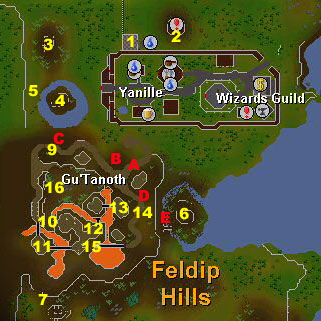
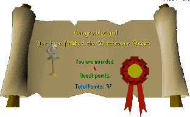

Watch Tower
Description: The Wizards of the Yanille Watch Tower have been reporting increased ogre sightings recently. Use a wide variety of your skills to help the wizards recover their stolen power crystals and stop the advance of the ogre hordes!Difficulty: Experienced
Length: Long
Items & Skills Needed:
- 14 Magic
- 14 Herblore
- 15 Thieving
- 25 Agility
- 40 Mining
- The ability to defeat a level 68 Ogre and run past level 111 Blue dragons
Recommended:
- 43 Prayer
- Weapon, armour and some food
Reward: 4 Quest points, 12,000 Magic XP, 5,000 coins, Watchtower Teleport (requires level 58 Magic)
Instructions:

Once you see the Watchtower (location #1), look around it for "climbing rocks". You should find them on the North outside wall of the Watchtower. This is the only way to get in at first. The Guards will attack you if you try to use the ladder. Climb up the rocks and you'll be inside on the 2nd floor the watchtower. Continue up the ladder to the 3rd and speak to Watchtower Wizard.
After you have spoken to the Watchtower Wizard, you will need to go outside (down 2 ladders) and search all the bushes around the Watchtower until you find some fingernails, an eye patch, a dagger, and some armor. Go back to the wizard and talk to him — this time you can use the ladder. He will send you on your mission to recover the crystals.
Now go down to the 1st floor and take the lit candle that respawns on the table (if you don't already have a lit candle). Also if you don't have a bat bone yet, you can get them now. There is a dungeon just East of the Watchtower (location #2). Cut through the webs and go down the stairs. Kill a bat to get bat bones.
First you will need to talk to Og the Ogre. Exit Yanille through the West gate and you will come to the ogre settlement (location #3). Speak with him and he will help you — but only after you have helped him. Og will give you a key and ask you to retrieve his gold bar that was stolen by Toban the Ogre.
Just South of Og, you will see a little island (location #4). Use the rope with the branch on the "long branched tree" (location#5). You will now swing over to the island. Talk to Grew the Ogre. He will ask for a tooth of his enemy — Gorad the Ogre. While you are here, get a janger berry before you swing back across. You will need them later in the quest.
To get to Toban and Goorad, you will need to gain access to the small island south of Yanille (location #6). You will not be able to access the island from the bridge. You will need to find the cave entrance that is South-West of the small island (location #7). When you're on the island, attack Gorad (level 56) and kill him. His tooth will automatically appear in your inventory. Now go talk to Toban. He will ask you for a dragon bone. Give him a dragon bone and he'll give you a part of the ogre statue. Now go open Toban's chest (which is on the same island) to retrieve Og's gold bar.
Go back to the other island (location #4) and use your second rope on the "long branched tree" branch (location #5) and swing across. Talk to Grew and give him the tooth. He will give you another part of the ogre statue. Go back to Og and talk to him. Give him the stolen gold bar and he will give you a third part of the ogre statue (one of the three ogres, either Og, Grew or Toban, will give you a crystal along with the statue part).
Now go back to the Watchtower wizard (location #1) and use the items on him. He will give you an ogre statue when you give him all the three parts. With the statue, you can now enter the Ogre city.
South of Yanille is a road that leads to Ogre city. Follow the road up the hill and then follow the western path. Talk to the Ogre guard (location #9) and he will throw you back down the hill. Now go back to him and use the statue with him. He will let you through the gate and into Ogre city.
Southwest of the main market area, you will find a Rock Cake stall (location #10). Steal a rock cake from the stall (do not eat the rock cake, as you will lose HP!) and follow the path from the gate. Leave the market area and follow the path south till you see 2 ogre guards and a battlement (location #11). Try to climb the battlement and you will be stopped by the guard. He wants a rock cake. Give the Ogre the stolen rock cake and he will allow you to climb over the battlement and across the bridge.
Now you will come to your next obstacle (location #12). You will come to a bridge with a rock that you need to jump off (to jump, simply click on the rock). Try to jump and you will be stopped by the guard and you'll have to pay 20gp to jump off. If you jump over successfully, you will end up on the other side. Go over the bridge and you'll see several city guards (location #13). Talk to one of them and they will give you a riddle. The answer is death rune. Use a death rune with him and he will give you a scavid map.
Go out of the city and follow the path from the gate. Follow the path east till you see a cave (location #D). Be sure to have the scavid map and the lit candle on you. If you don't have a lit candle, you will end up in a empty cave and have to find a way out. Enter the cave and talk to the scared scavid. They will help teach you their language. However, you must speak with the other scavids as well.
Exit the cave and search around the ogre city for caves (locations #A, B, C, E). Enter the caves and talk to the scavids. Give them the right response. When you have given the right response to all the scavids, go to the Scared Scavid again and talk to them.
Go out of the cave and follow the path north till you see 2 ogre guards (location #14). Talk to one of them. He will ask for a gold bar. Use the gold bar with him and he will let you through. Follow the road, cross the bridge and enter the cave (location #15). Talk to the mad scavid in there. Give him the right response and he'll give you the second crystal. Take 2 nightshades that respawn there.
Go to the market and use the nightshade with the guard in front of a cave entrance (location #16). Enter the cave (warning: do not enter the cave without a anti-dragon shield!). Once you're in the cave (there are ogre shamans, ogre guards and blue dragons in here. Do NOT attack the ogre shamans), go North till you see a cave exit. Go out the exit and back to the wizard. He will tell you about a potion that will kill the ogre shamans.
Get your janger berry, guam leaf, pestle and mortar, water filled vial and bat bones. Mix them in this order (any other order will make the potion explode in your face and you'll lose a fair amount of hp): add a guam leaf to the water filled vial, then add the janger berry (use — not eat — the berry), grind your bat bones and add the ground bat bones. Go back to the wizard and he will enchant the potion.
Go back to the market cave (location #16) and use your second nightshade on the guard. When you're in the cave, you'll have to use the potion with all the shamans. When you use the potion on a shaman, he disappears. When you use the potion on the last shaman, he disappears and drops the third crystal.
Go to the rock in the middle of the cave. Mine the rock and you should get the fourth and last crystal.
Go back to the wizard and talk to him. Flip the switch on the West wall and…
Congratulations, Quest Complete!

This quest guide was written by payman and irish_buddha. Thanks to goatluver500, L3tHaL LeAdA, and Grand Gaia for corrections.
This quest guide was entered into the database on Tue, May 18, 2004, at 04:26:49 PM by DRAVAN and CJH and was last updated on Mon, Aug 02, 2004, at 08:52:16 AM.